Field Experience & Inspections
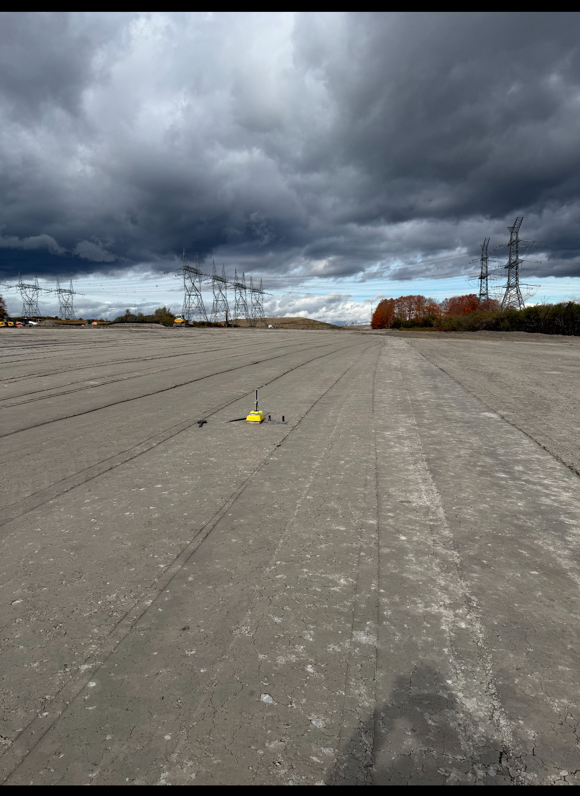
Darlington SMR (Holt SS)
• Coordinated between engineers and contractors regarding critical earthwork and compaction.
• Maintained rigid nuclear-grade material tracking, lift records, and specifications.
• Sharpened skills in site-level problem solving amongst a multidisciplinary team.
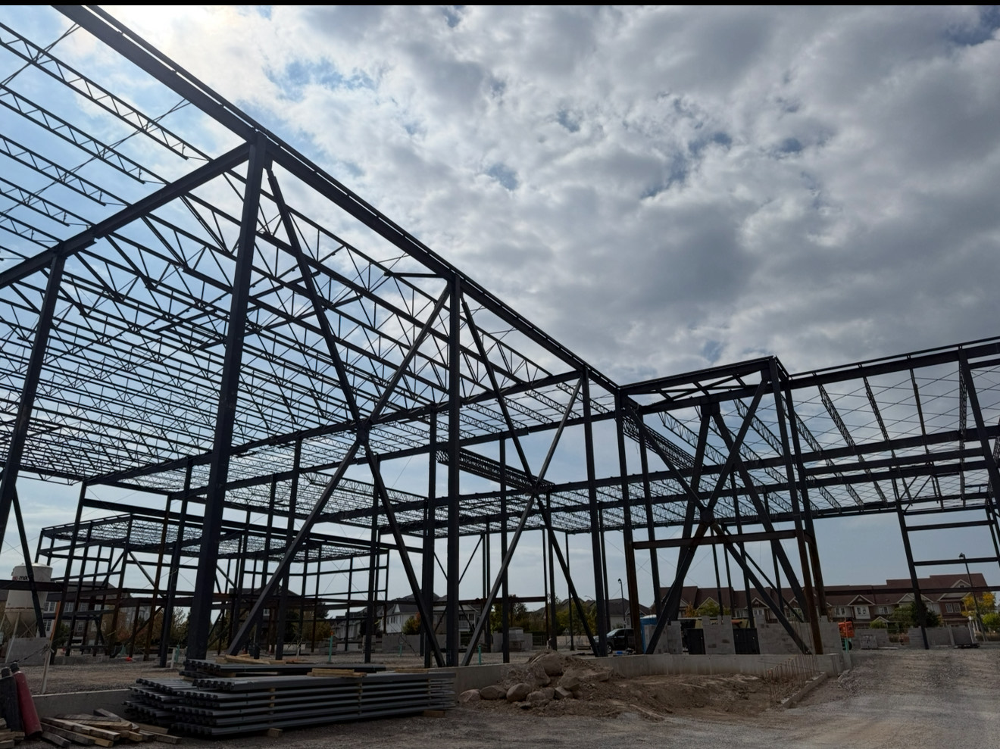
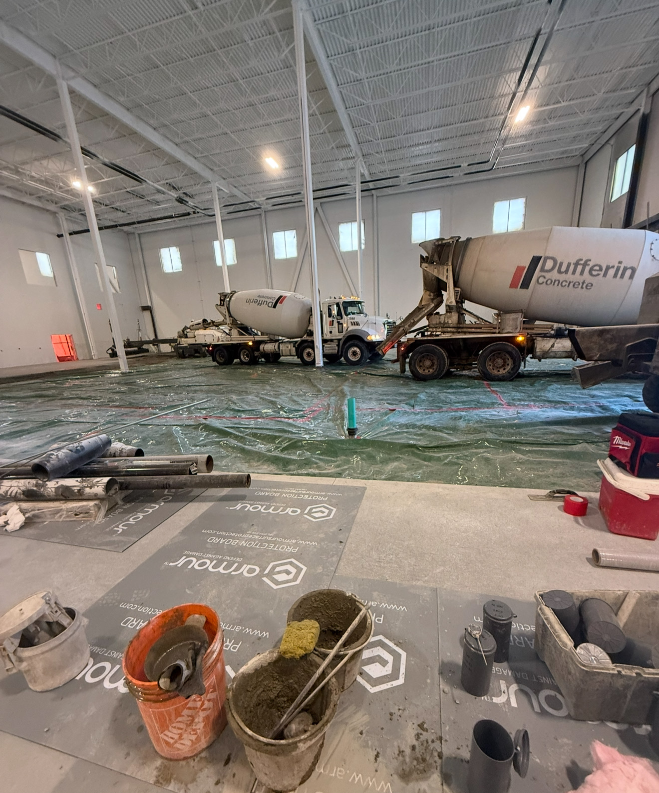
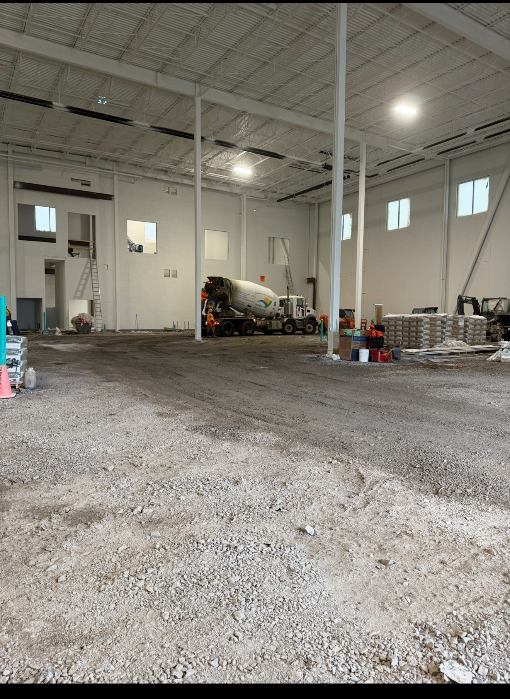
Smart Flexible Packaging Facility
• Assisted with structural steel inspections, verifying onsite steel positioning against IFC drawings
• Coordinated QA/QC for >500 m³ of concrete placement, managing technical reporting and liaison work.
• Ensured all field inspections met rigid industrial specifications and safety standards.
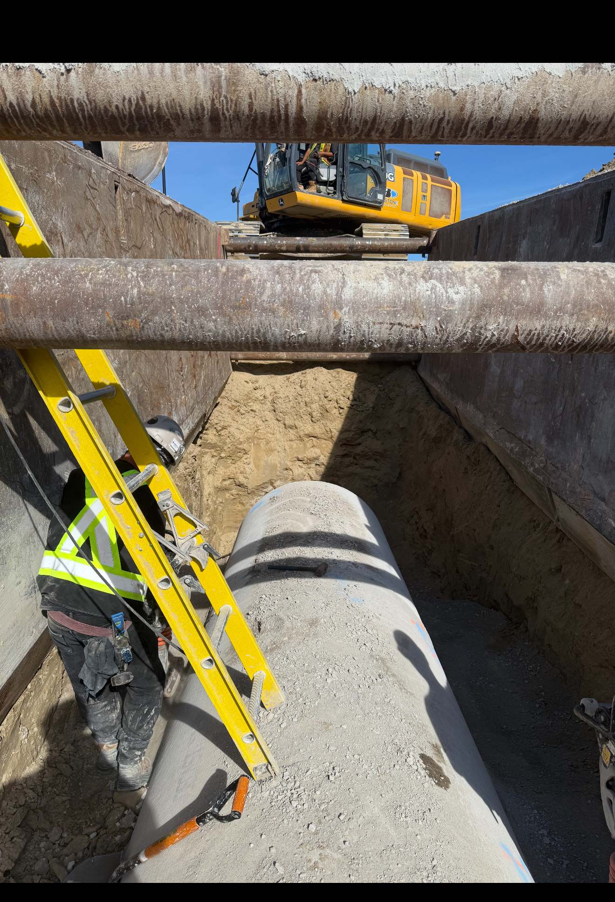
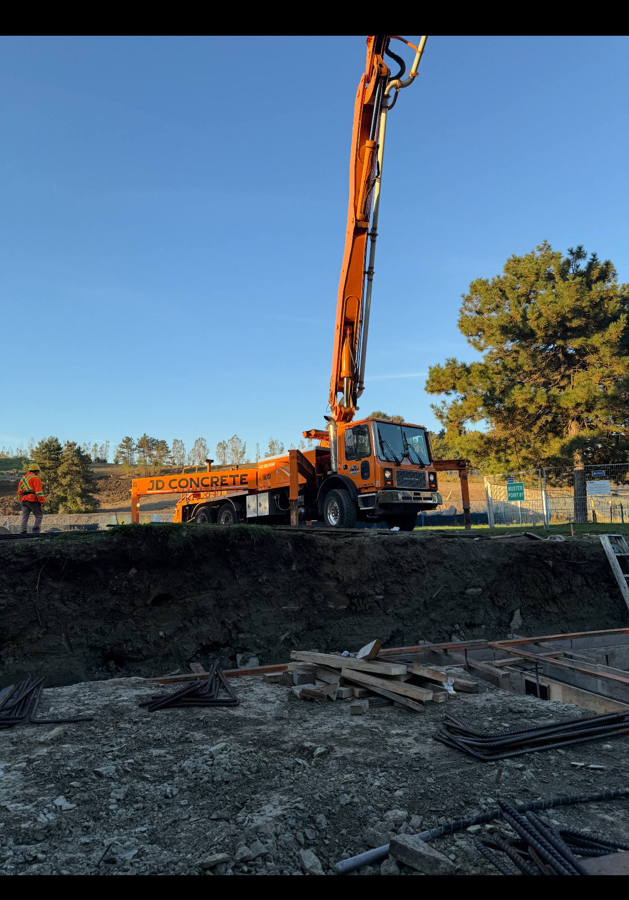
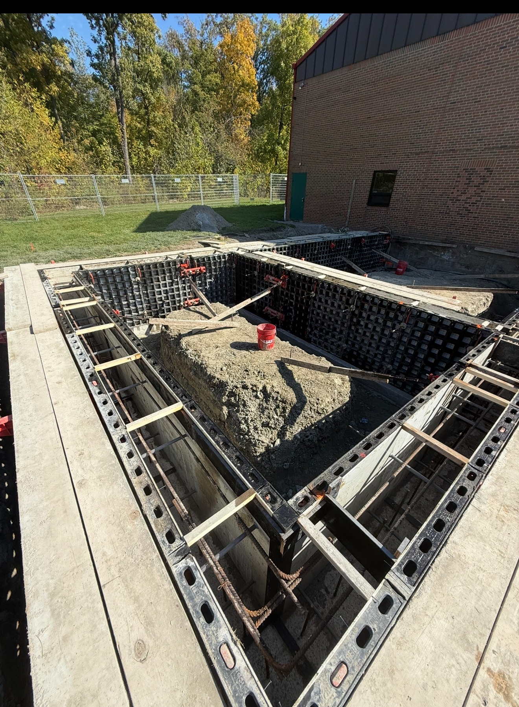
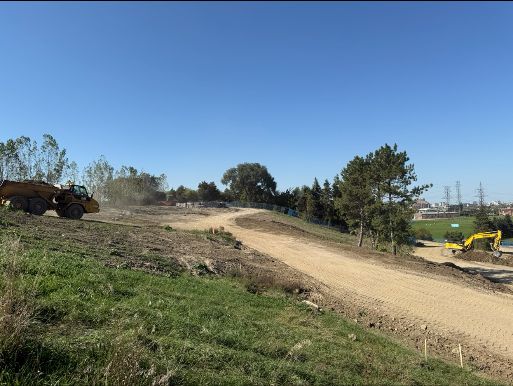
Centennial Park Master Plan
• Executed field inspections and density testing to ensure geotechnical stability.
• Performed rebar and concrete inspections to verify placement met engineering specifications.
• Managed detailed field reports and documentation to track compliance throughout construction.
Technical Skills
Structural Analysis
- ETABS
- SAP2000
Design & Drafting
- AutoCAD
- Revit
Codes & Standards
- CSA S16 (Steel)
- CSA A23.3 (Concrete)
Field & QA/QC
- Structural Inspection
- Site Coordination
Academic Projects
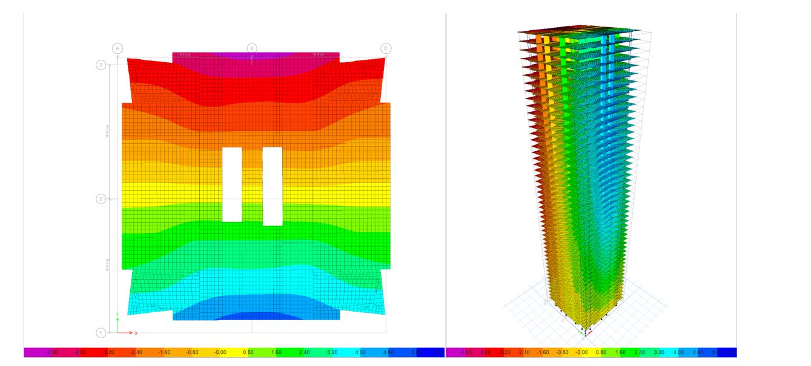
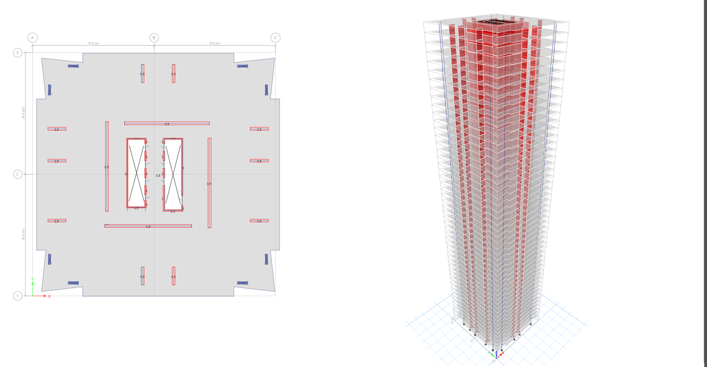
ETABS Structural Analysis: 50-Story RC Building
Performed wind and seismic stress analysis for a reinforced concrete high-rise. Modelled using AutoCAD, implemented NBCC to evaluate displacment and stress throughout structure.
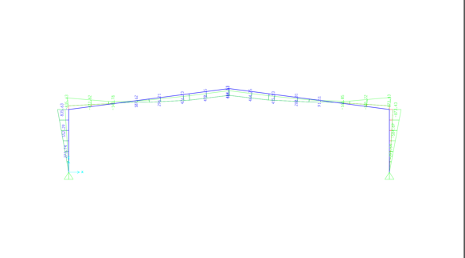
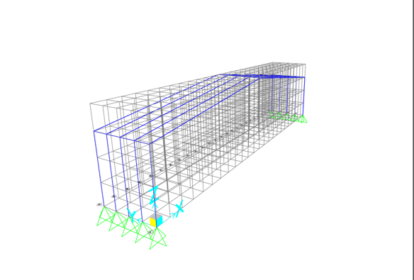
Steel Structural Analysis and Design
Developed a 3D structural model of a steel portal frame to derive axial, shear, and bending moment envelopes. Analyzed 5 principal load combinations to identify critical deformations and utilized stress ratio evaluations to optimize member sizes for economical and structural suitability in accordance with CSA S16
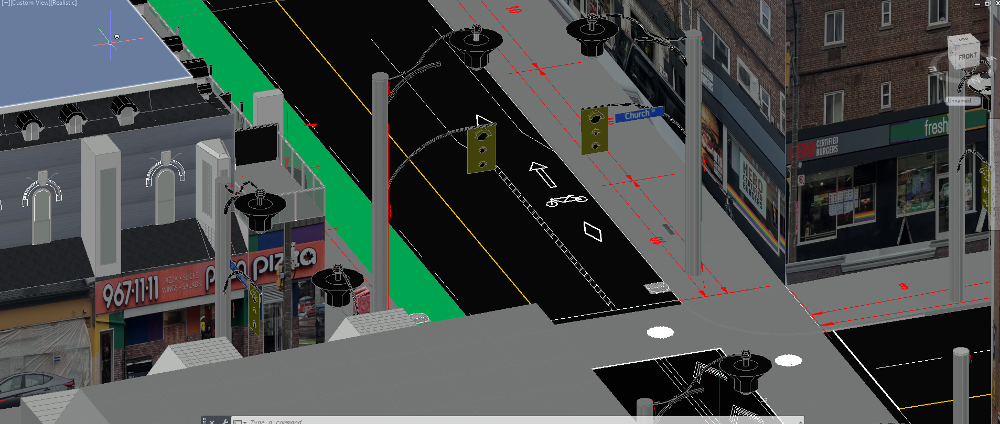
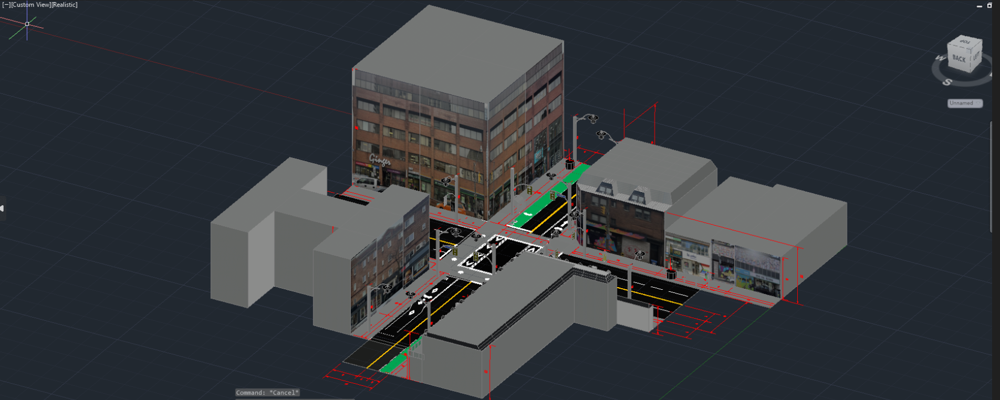
Modelling of street intersection using AutoCAD
Worked with AutoCAD 3D to remodel Church/Wellesley intersection